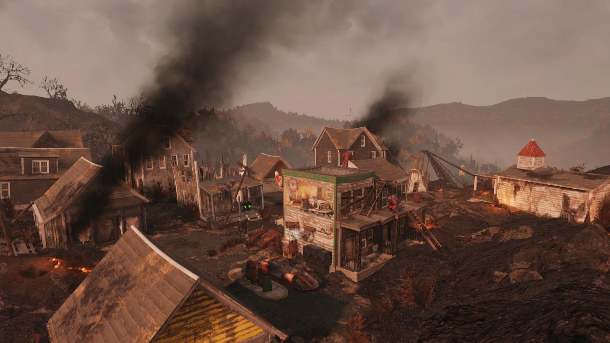
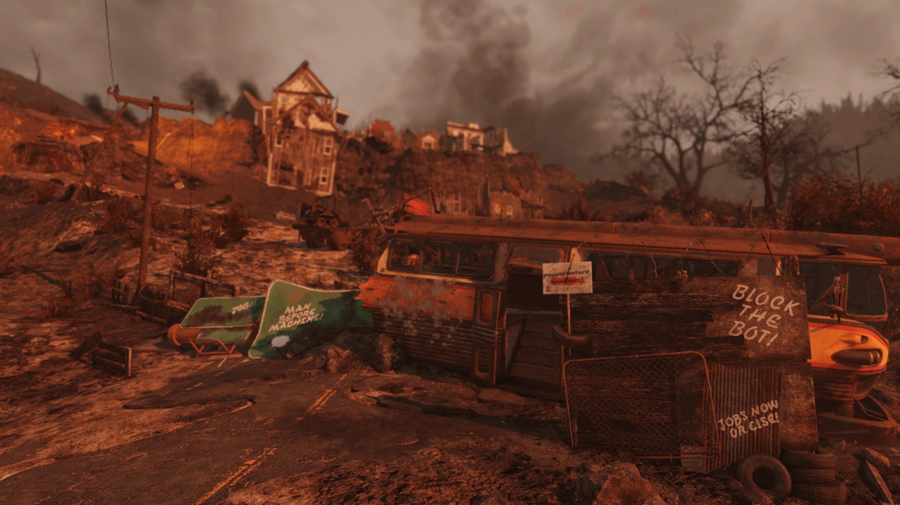
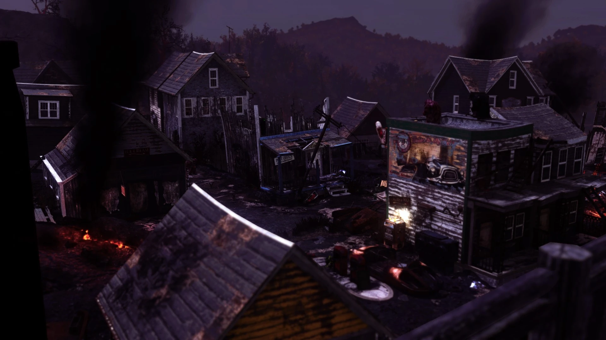
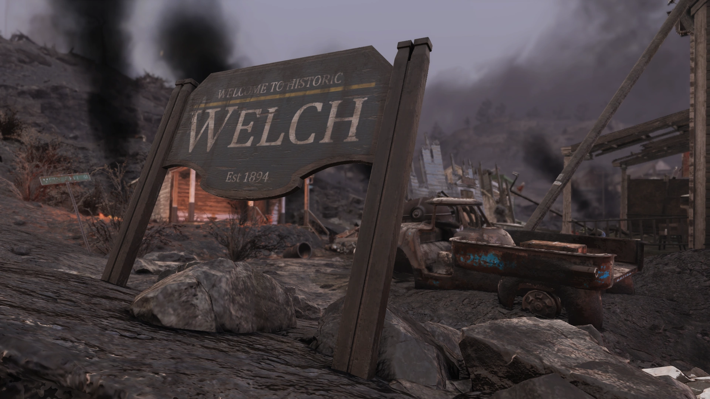
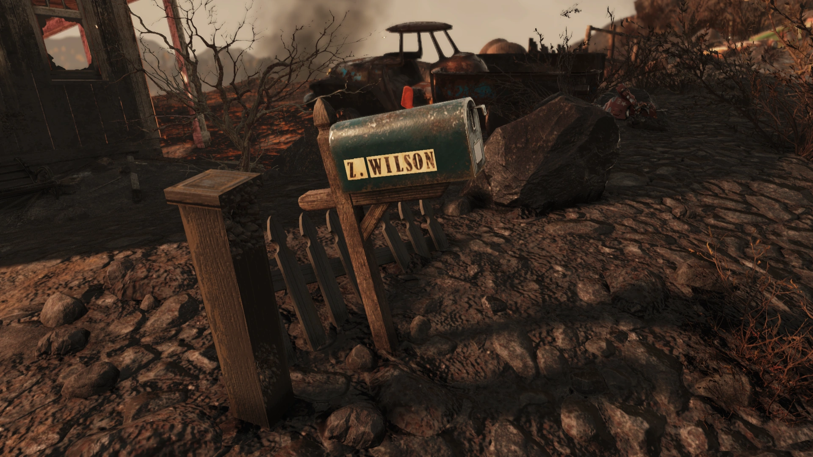

Welch
ウェルチ
概要
2077年、ホーンライト・インダストリアル・マイニング社による自動化の導入により、町での失業率が増加していました。2077年11月の選挙で条例第6号が可決されれば、完全な自動化への移行が義務付けられることになっていました。
第2の鉱業会社であるアトミックマイニングサービス（AMS）は、貴重なウルトラサイトの発見を理由に、地域を活性化し経済を再活性化させる約束で町にアプローチしました。地震によっていくつかの家屋が被害を受けた後、AMSは「その土地の資源権利」を主張し、ウルトラサイト鉱石を含む土地を所有する住民を立ち退かせ始めました。町の人々は立ち退かせようとする彼らに対して反乱を起こし、この暴力的な衝突により、州兵が出動する事態となりました。
大戦後、ディープスリープ・プロジェクトを遂行していたU.S.S.A.（米国宇宙局）の宇宙船の一部がウェルチの通りに墜落しました。そこには、大気圏再突入時にミッションコマンダーのソフィア・ダゲールとはぐれてしまった3人の宇宙飛行士（バーナード、ノワク、リー）の遺体が収容されていました。
レイアウト
ウェルチは現在、ウェルチ駅の崖の下に位置する1階建ておよび2階建ての建物とその残骸だけが残る荒れ地となっています。地面の火災が点在し、地域に多数存在しています。マウントブレアの南西斜面に位置し、町の西端全体は地盤の変動によって引き裂かれています。町にアクセスするには、地面の大きく開いた割れ目を迂回して上へ移動する必要があります。
中心部にある建物の集団には、板で塞がれた家屋や地面のひび割れが含まれます。中央エリアには武器作業台があり、廃墟となったガソリンスタンド、郵便局、そして隣接する質屋があるパン屋に囲まれています。また、町の北側にあるガスポンプのそばにはU-Mine-It! 自販機が設置されています。
南東にある無傷の2つの家屋には、細工師の作業台ともう1つの武器作業台があります。そのうちの1つは、丘の上にあるレンガ造りの建物で、エヴァンの家です。もう1つの武器作業台は、エルクホーン通りにある郵便局の西側のガレージの壁際にあります。この通りのいくつかの建物は木製のキャットウォークで繋がれており、通りや町の至る所でアッシュローズを見つけることができます。ダッチェスの隠れ家は、町の西側にある崩壊した建物の裏手にあり、他のほとんどの家から崖を下ったところにあります。その青い郵便受けには「Z. Wilson」と書かれています。町全体には通常、モールマイナーがうろついています。
町全体に鉱床が存在します。ここで採掘できる鉱石は、ブラックチタン、ウラニウム、鉛、石炭、銀、銅、アルミニウムです。ウルトラサイトと金以外の鉱石はすべて揃っています。
主なアイテム
- 監督官のログ、5 - ホロテープ。エヴァンの家にある。
- 監視システムのテープ - 8/08/77 - ホロテープ。南東にある破壊された家屋の寝室。
- 事件のメモ：ダッチェス - メモ。監視テープのそば。
- 立ち退き通知の録音：カミンスキー家 - ホロテープ。ダッチェスの隠し場所付近の崖から突き出た棺の中。
- 米国宇宙司令部クルーのドッグタグ - クエストアイテム。墜落した宇宙船の中。
- レシピ：デルバートのサンシャインオイル - 南東の家屋のキッチン。
Vault 76は最も優秀で聡明な人々を受け入れるために建設されたが…全てのVaultがそうではなかった。社会保存プログラム。私は知るべきではなかったが、それを知った時…エヴァンは私にマスコミに話すよう望んだが…私はそうしなかった。
ええ、Vaultの居住者で人体実験を行うことは倫理的に間違っていた。でも、再繁殖に最も適した人々を見つけ出すという目標、極限状態に追い込まれた人類を理解すること、それが私たちが生き残るための唯一の方法だったとしたら？全ての人を救うことはできない。彼らはいつもそう言っていた。そして私は思った…そして今でもそう思っている…彼らは正しかったのだと。Vault-Tecは私が真実を知っていることに気づいた。私は解雇されるか、逮捕されると思っていたが、代わりに彼らは私を信用した。Vault 76はコントロールVaultになる。実験は行われない。
私はとてもホッとしたが…彼らは私をワシントンD.C.のVault 101に配属するつもりだと言った。私はウェストバージニア…私の愛する人たちを…置いていかなければならなかった。彼らにそんなことはさせられなかった。何をしてでも。本当にごめんなさい、エヴァン。別の選択をしたと言えたらいいのに。爆弾が落ちた時、この家で一緒に死ぬことを選んだと言えたら。あなたのことを忘れたことは一日だってないし、何があったのか分かるまで諦めない。もしあなたがここにいないのなら、あなたの行きたい場所は他に一つしかない。鉱山だ。
ダッチェス: あら、今日はエージェント・デンジャーなの？
エージェント・デンジャー: はい、奥様。エージェント・トルネードは引退しました。ミッション中の巻き添え被害が多すぎたので。
ダッチェス: そうなの？
エージェント・デンジャー: ええ。ママはもうエージェント・トルネードの真似はダメだって言いました。でもエージェント・デンジャーについては何も言ってなかったので。
ダッチェス: まあ、本当に抜け目のない子ね。
エージェント・デンジャー: 奥様、なんだかそれって、あんまり美味しそうなクッキーじゃないみたいです。
ダッチェス: ふふ。そうかもしれないわね。それで、今日はどんな素晴らしい用件かしら？
エージェント・デンジャー: ママが、ダッチェスさんにバファウトをあと2錠もらえるか聞いてきてって。ジェラルドがそれなしじゃ働けなくて、私たちは絶対に払うってママは知ってるからって。
ダッチェス: ママはあなたに物乞いをさせに寄越したのね。
エージェント・デンジャー: はい、奥様。
ダッチェス: あなたがこの世界でたった一つの私の弱点だからよ。
エージェント・デンジャー: あー、そうだと思います、奥様。
ダッチェス: エージェント・デンジャー、私のためにちょっとしたミッションを受けてみない？ ワバッシュの店にある、一番冷たくてキンキンに冷えたヌカ・コーラが3本必要なの。お金をあげるから、私のために買いに行ってくれるかしら？ そのうちの1本はね、あなたの名前が書いてあるのよ。
エージェント・デンジャー: エージェント・デンジャーにお任せあれ！
ダッチェス: いい子ね。急いで行ってらっしゃい！ブッチの分もね！……ブッチ。
ブッチ: はい、奥様？
ダッチェス: ベティのところに挨拶に行ってちょうだい。これが彼女が受け取れる最後の掛売りだと伝えるの。エージェント・デンジャーの気を逸らしておくから、その間に話を100%分からせてきなさい。
ブッチ: 承知しました。
我々はベティ・デクランドの娘から目を離さずに監視している。ダッチェスはどうやらあの娘をひどく気に入っているようだ。彼女が子供を利用してクスリを無心させていることは遺憾だが、これはダッチェスをコントロールするための強力なカードになるだろう。





ウェルチを訪れると、アパラチアの歴史の一端に触れることができます。
ホーンライト・インダストリアルの影響力がこの地域にも及んでいたことが分かります。
彼らの自動採掘機は効率的な資源収集を可能にしましたが、同時に多くの鉱山労働者の仕事を奪いました。
ターミナルやメモに残された記録を読み解いていくと、このロケーションに関わった人々の生々しい物語が浮かび上がってきます。
こうした細部のロアを追いかけるのが、Fallout 76の探索の醍醐味ですね。
This article was created by translating and editing Welch from Nukapedia: The Fallout Wiki.
Licensed under the Creative Commons Attribution-Share Alike License (CC BY-SA 3.0).
コミュニティ維持のため、寄付を受け付けております。
> COMMENTS